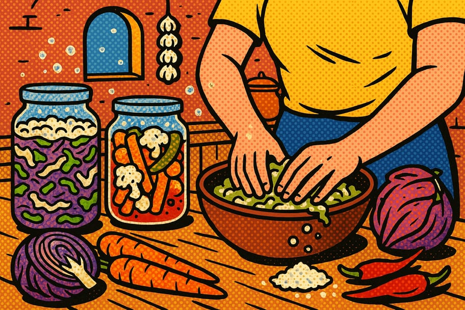

Recetario de fermentos vivos

Fermentar es dejar que las bacterias buenas trabajen por nosotros: conservan los alimentos, los hacen más digeribles y les dan ese sabor ácido y vivo. Estas tres recetas usan solo sal, verduras y tiempo. La regla de oro de la lacto-fermentación: todo bien limpio y las verduras siempre sumergidas bajo la salmuera.
🥬 1. Chucrut de col
- ☐ 1 col mediana (1 kg aprox.)
- ☐ 20 g de sal de mar (sin yodo)
- ☐ 1 cucharadita de semillas de comino o eneldo (opcional)
- ☐ 1 frasco de vidrio de boca ancha
- 1Rebanar
Quita las hojas externas y reserva una entera. Pica la col en tiras finas y colócala en un recipiente grande.
- 2Salar y masajear
Agrega la sal y amasa con las manos limpias durante 5–10 minutos hasta que la col suelte su propio jugo y quede blanda.
- 3Envasar
Pasa la col al frasco prensándola con el puño para que el líquido la cubra por completo. Pon encima la hoja entera reservada como tapa.
- 4Fermentar
Cierra sin apretar del todo y deja a temperatura ambiente, lejos del sol, de 5 a 14 días. Prueba desde el día 5: cuando esté ácido a tu gusto, refrigera.
🥕 2. Verduras en escabeche lacto-fermentadas
- ☐ Zanahoria, coliflor, ejote y chile jalapeño al gusto
- ☐ 1 litro de agua sin cloro
- ☐ 30 g de sal de mar (salmuera al 3%)
- ☐ 2 dientes de ajo y hierbas (orégano, laurel)
- 1Preparar la salmuera
Disuelve la sal en el agua. Si usas agua de la llave, déjala reposar destapada unas horas para que se evapore el cloro.
- 2Cortar las verduras
Trocea las verduras en tamaños parejos y acomódalas en el frasco junto con el ajo y las hierbas, bien apretadas.
- 3Cubrir y pesar
Vierte la salmuera hasta cubrir todo. Usa un peso (una bolsa con agua o un trozo de verdura) para que nada flote sobre la superficie.
- 4Fermentar
Deja de 4 a 7 días a temperatura ambiente. Estarán listas cuando estén ácidas y crujientes. Refrigera para frenar la fermentación.
🌶️ 3. Salsa de chile fermentada
- ☐ 250 g de chiles frescos (jalapeño, serrano o de árbol)
- ☐ 3 dientes de ajo
- ☐ 15 g de sal de mar
- ☐ Vinagre de manzana al final (opcional)
- 1Picar
Pica grueso los chiles (con o sin semillas según el picor deseado) y el ajo. Usa guantes si los chiles son muy picosos.
- 2Salar y envasar
Mezcla con la sal y pásalo al frasco, prensando para que suelte jugo y quede cubierto por su propio líquido.
- 3Fermentar
Deja de 5 a 10 días a temperatura ambiente. Verás burbujas: es buena señal. "Eructa" el frasco a diario abriéndolo un momento.
- 4Licuar y guardar
Licua todo (puedes añadir un chorrito de vinagre para acidez extra). Cuela si quieres una salsa fina y refrigera. Dura meses.
💡 Consejos generales
- El secreto es mantener todo bajo la salmuera: lo que queda al aire se echa a perder.
- Entre más calor, más rápido fermenta. En climas calientes revisa cada día.
- Guarda un poco del líquido de un fermento exitoso para arrancar el siguiente más rápido.
- Reutiliza la salmuera sobrante como aderezo para ensaladas o para cocer frijoles.
¿Te sirvió este recetario?
Compártelo en tu comunidad y explora más recursos en Guardianes del Pulque.
← Más recetarios 💚 Donar